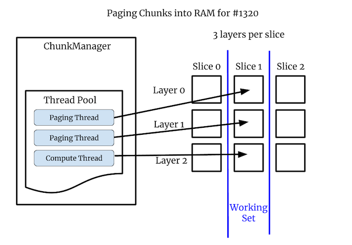
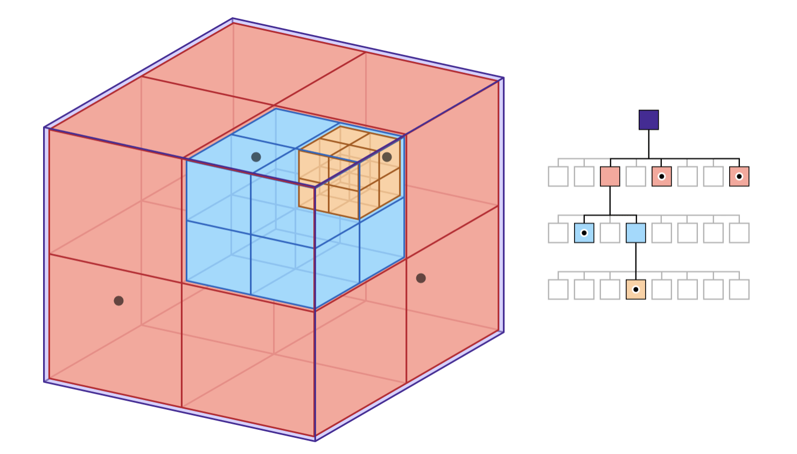

Rendering in napari¶
This document outlines our plans for making napari’s rendering non-blocking. We hope to update this document as we progress so it can be an accurate record of the final implementation.
Blocked UI¶
In May 2020 we looked into these three issues related to napari’s blocked UI:
Issue |
Summary |
|---|---|
UI blocked by Disk or Network IO while rendering multi-scale images |
|
UI blocked while rendering large in-memory images (not multi-scale) |
|
UI blocked while rendering small images due to lazy computations |
When the UI is “blocked” napari feels slow and lags. It’s not just an aesthetic issue, manipulation of interactive UI elements like sliders becomes nearly impossible if the framerate is low enough. Blocking can even lead to the “spinning wheel of death” on Macs indicating the application is hung.
Napari is very extensible and customizable and users can create what amounts to custom applications built on top of napari. In those cases a blocked UI doesn’t just hamper viewing images, it can take down their entire application. For all of these reasons we never want napari’s GUI thread to block.
Framerate¶
Most screens refresh at 60Hz and ideally GUI applications draw at the same speed. If 60Hz cannot be achieved the application should draw as fast as possible. Slow framerates lead to bad user experiences:
Framerate |
Milliseconds |
User Experience |
|---|---|---|
60Hz |
16.7 |
Great |
30Hz |
33.3 |
Good |
20Hz |
50 |
Acceptable |
10Hz |
100 |
Bad |
5Hz |
200 |
Unusable |
Even if the average rate is fast, applications are called janky if their framerate jumps around. Even one slow frame can be annoying to the user. We want napari’s average framerate to be high but we also want the framerate to be as consistent as possible.
Array-like Interface¶
Napari renders data out of an “array-like” interface, it can use any object that
supports numpy’s slicing syntax. This is a powerful abstraction, but the
flexibility creates a huge challenge for napari. Many graphics applications have
specific and customized data formats, but napari needs to work with basically
any source of data.
With Dask or custom code it’s possible that an array access will result in disk or network IO. It’s even possible the data does not exist at all and it will be computed on-the-fly. In this case the user’s code is doing the computation and napari has no control or visibility into the computation or how long it will take.
In #845 the array access leads to loading data from disk or over the network. In #1320 the array access leads to a machine learning calculation with Torch. In #1300 the problem is different. There the data is already entirely in memory, but it’s not chunked. In that particular case we transfer 100’s of MB to the card in one shot and this is what blocks the UI. We can’t allow huge monolithic arrays of data in napari. Everything must be broken down into reasonably sized chunks.
Requirements¶
In order to never block the GUI thread we need to do two things:
Always break data into chunks. The exact maximum chunk size is TBD.
Never call
asarrayon user data from the GUI thread since we don’t know what it will do or how long it will take.
Render Algorithm¶
The renderer will compute the working set based on the current view. The working set is the set of chunks that we need to draw to fully render that specific view. The renderer will step through every chunk in the working set and do one of these three things:
Case |
Action |
|---|---|
Chunk is in VRAM |
Render the chunk |
Chunk is in RAM but not VRAM |
Transfer the chunk to VRAM if there is time |
Chunk is not in RAM |
Ask the ChunkLoader to load the chunk |
If a chunk cannot be drawn a placeholder will be drawn instead. What we draw as a placeholder is TBD and it may vary depending on the situation. In some cases we might be able to draw a lower resolution version of the data, which can be refined later as more data is available. In the worst case we might have to draw a blank grid or a loading animation.
The important thing about this algorithm is it never blocks. It draws what it can and works on getting more stuff to be drawable next time.
Chunks¶
Chunks is a deliberately vague term. For our purposes a chunk is data used to render a portion of the scene. Without chunks we have only two choices: render nothing or render the entire scene. With chunks we can partially render the scene using whatever chunks are currently available, and we can progressively add more chunks as more data is loaded.
Progressive rendering is valuable because the user can often navigate or make other decisions with partially loaded data, so the user can work faster. Also progressive rendering just feels more pleasant for the user. Progressive rending makes the internal state of the application visible which is often leads to a better user experience.
Chunked File Formats¶
The most common types of chunks are blocks of contiguous memory inside a chunked file format like Zarr and exposed by an API like Dask. If an image is stored without chunks then reading any given small 2D region of the image requires many different read operations. The bytes for that region are spread throughout the file, intermingled with the bytes from other regions. With chunking you can read a rectangular region with a single read operation.

For 3D images the chunks are using 3D, but the idea is the same. Neuroglancer often recommends that data is stored in 64x64x64 chunks such that each chunk contains 256,000 voxels. Using cubes is nice because you get the same performance whether you are viewing the data in XY, XZ or YZ orientations. It’s also nice because you can scroll through slices quickly since on average you have 32 slices above and below your current location.
Creating Chunks¶
In #1300 there are no chunks since the images were created in memory as one monolithic array. To solve #1300 we are going to have to break that array into chunks, so we can send the data to the graphics card incrementally. In #1320 the images are small so they are not chunked, but there are 3 image layers per slice. In that case the image layers are our chunks. In general we can get creative with chunks, they can be spatial or non-spatial subdivisions, basically anything we want. As long as something can be loaded and drawn independently it can be a chunk.
Loading into RAM and VRAM¶
Getting data into VRAM where we can draw it is a two step process. First it needs to be loaded into RAM and then transferred into VRAM. Loading into RAM must be done in a thread since we don’t know how long it will take. For example loading data over the internet or doing a complex calculation to produce the data could both take a really long time.
Loading into VRAM is a different story because it must happen in the GUI thread, at least with OpenGL. Therefore we need to amortize the transfer over some number of frames. We will set a budget, for example 5 milliseconds. Each frame can spend up to that much time loading data into VRAM before it starts drawing. It’s important that no single chunk takes more than 5 milliseconds to transfer, otherwise we will definitely go over our budget when we transfer that chunk. So our budget determines our maximum chunk size.

When the rendering process is viewed as a timeline, the rendering thread has regularly spaced frames, while the IO and compute threads load data into RAM in parallel. When a paging/compute operation finishes it puts the data into RAM and marks it as available, so the renderer can use it during the next frame.

Example: #1320¶
In #1320 the images are not chunked since they are very small, but there are 3 layers per slice. These per-slice layers are our chunks. Some layers are coming off disk while some are computed. The “working set” is the set of chunks we need to draw the full current scene. In this case we need the visible layers for the current slice.

Example: #845¶
In #845 we are drawing a multi-scale image which is chunked on disk.
Chunk Size¶
It’s confusing but there can be different chunk sizes in play at one time. Dask chunks are often larger than the file format’s chunks. This means loading one Dask chunk will cause many disk chunks to load. We might set our rendering chunks to be the same size that Dask is using, if we can determine that, or we might chose a different size.
In the end there are two different types of speed: framerate and load time. As long as the chunk size is not too big we should be able to get a good framerate. However loading speed can be trickier and can depend on many factors. If chunk sizes are not aligned we might end up loading more data that we need, which will slow us down.
Sometimes there is a tradeoff, perhaps we can speed up loading by slowing the framerate a bit. Hopefully we can come up with defaults that work well for most situations, but we’ll probably need to provide a way for the user to tune the chunk size and other parameters if necessary.
Octree¶
To solve #1320 our chunks will
be layers. The ChunkLoader can write the data into the Image object for those
layers. However with #845 and
#1300 chunks are spatial so we
need a new spatial datastructure that can keep track of which chunks are in
memory and store the per-chunk data. We are going to use an octree. See
Apple’s nice
illustration of an octree:

In a quadtree every square node is divided into 4 children representing the 4 spatial quadrants of that node: upper-left, upper-right, lower-left and lower-right. An octree is the same idea but in 3D: every node has up to 8 children, the 4 on top and the 4 on the bottom.
We can use our octree for 2D situations just by restricting ourselves to the top 4 children. So we plan to always use the same octree datastructure, we’ll use it for both 2D and 3D data.
Multi-resolution¶
Like image pyramids the octree can store many versions of the same data at different resolutions. The root node contains a downsampled depiction of the entire dataset. As the user zooms in, we descend into child nodes which contain ever smaller portions of the data, but at ever higher resolutions.
In all cases if a chunk is not in memory it will be requested from the
ChunkLoader. Until the data is in memory the renderer will draw a
placeholder. In many cases the best placeholder will be from a different level
of the octree. This will produce the familiar effect where the image is
initially blurry but then “refines” as more data is loaded. In the worst case if
no stand-in is available the placeholder can be a blank grid, potentially with
some sort of “loading” animation.
Beyond Images¶
We are starting with 2D images but we are going to build the ChunkLoader and
octree in a generic way so that we can add in more layer types over time,
including 3D images, points, shapes and meshes. 2D images are the simplest case,
but we believe most of the infrastructure we create can be used by the other
layer types as well.
There are several reasons the other layer types might be harder than 2D images:
Downsampling images is fast and well understood but “downsampling” geometry can be slow and complicated. Plus this is no one definitive result, there will be complicated trade-offs for speed and quality.
Sometimes we will to want downsample versions of things into a format that represents the data but does not look like data. For example instead of seeing millions of tiny points, the user might want to see a heatmap or bounding boxes indicating where the points are located. Many different types of visual aggregation are possible and we will need to experiment and get user feedback.
With images the data density is spatially uniform but with geometry it can vary drastically. You can pack millions of points/shapes/triangles into a tiny area. This subverts spatial subdivision schemes and handling this gracefully might require other solutions.
Luckily we don’t need to solve all of these problems at once. We will start with 2D images and grow from there. It’s not necessary that all layers types use an octree. To start we can use an octree for images but render other layers without any spatial organization. This will work fine as long as we can render all the data in those other layer types quickly enough.
We could also start using an octree with a non-image layer type but use a very simplistic downsampling scheme at first, for example just show bounding boxes. Then we can improve the downsampling method over time. In general we can incrementally improve the rendering system in many ways.
Implementation Plan¶
We will resolve #1320 first with these steps:
Create a
ChunkLoaderclass that uses an@thread_workerthread pool.Introduce a
DataSourceclass whose data may or may not be in memory.The paging thread will put its data into
DataSourceand trigger adraw()so the renderer will draw the new data.Probably
_set_view_slicewill become thedraw()method. It will draw the chunks that it can and request or transfer the rest.Experiment with out how we set the size of the thread pool.
With #1320 resolved the next big step will be creating an octree and the related infrastructure to take on #845 and #1300. Once more is known about the octree we will document it here.
Appendix¶
A. Number of Worker Threads¶
How many worker threads should we have? The challenge is the optimal numbers of threads will depend on the workload, but we don’t know what’s going on behind the array-like interface. Some possible workloads:
Workload |
Optimal Number Of Threads |
|---|---|
Local IO |
Depends on the device and the access patterns. |
Networked IO |
A large number since setup costs are large and compute is minimal |
Small Compute (1 core) |
We probably want one thread per available core. |
Big Compute (all cores) |
Maybe we want just one thread total. |
We will probably try to aim for “reasonable defaults which yield reasonable performance”. If necessary we might have ways for the user to configure the number of threads. A fancy thing would be try to infer what’s going on and have napari adjust the number of threads dynamically.
B. Threads, Processes and asyncio¶
Hopefully we can stick with threads for parallelism. However in Python threads cannot run completely independently of each other due to the Global Interpreter Lock (GIL). Luckily in many cases a thread will release the GIL to do IO or compute-intensive operations. During those spans of time the threads can run independently.
The GIL only applies to threads that are actively running Python bytecode. Only one thread can be executing bytecode at a time. The GIL server a useful purpose, it makes Python threads safer to use than threads in many languages. In Python two threads can in many cases access the same datastructure without a lock because the GIL serves as kind of a universal lock for all datastructures.
If our threads interfere with either other too much and performance suffers we might consider switching to processes at least some of the time. Processes offer total independence, but processes do not share memory by default, so that could add complexity.
Python also has asyncio which
gives you concurrency but not necessarily parallelism. The advantage is the
concurrent tasks are much lighter weight than threads. In some languages you can
have millions of concurrent tasks going at once. asyncio is relatively new and
we should keep it in mind for rendering and for other purposes.
C. VRAM and Vispy¶
With OpenGL you cannot directly manage VRAM. Instead we will control what’s in VRAM by creating and drawing vispy objects. By drawing objects in our working set VRAM will soon contain what we want. We will tightly manage the construction and destruction of vispy objects to match the current working set. We also have to make sure that we don’t create too many new objects in one frame which could cause us to exceed our time budget.
This document does not get into vispy only because we don’t know those details yet.